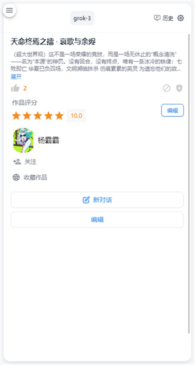
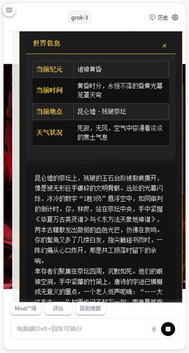

DZMM.ai 避坑：这些地方你大概率会踩
用 DZMM.ai 做角色卡和对话，看似简单，实则有好几个容易让人抓狂的坑。本文从实际使用经验出发，逐一拆解症状、根因和绕开之道。
DZMM.ai 的官网介绍得很简单，就是一款手机上的 AI 角色互动应用——自己创建角色卡、从社区收藏别人的作品、多模型随时切换。下载之后直接就能用，刚装上时我以为就是个"聊天壳"，随便填两行人设就能开玩——结果没到三天就踩了好几个坑，有的卡了半小时才搞明白，有的到现在还在反复犯。写这篇就是把我踩过的几个最容易中招的坑唠唠，后面你遇到了能省点时间。

坑一：导入的 JSON 角色卡，人设完全对不上
症状：从社区收藏或从朋友那转了个 JSON 文件进来，点"开始对话"，AI 开口第一句就觉得不对。简介写的是"温柔的学姐"，结果说话像个没睡醒的复读机；或者人设里明明写了"不爱解释、直接给结论"，它却每次都要长篇大论铺垫一番。
原因：DZMM 能识别主流平台的 JSON 格式，但不同平台对字段的叫法和嵌套深度不一样。有些导入的卡缺关键字段——比如只有名字和简介、没有说话风格和反应示例，AI 只能从两句话里自己脑补角色应该怎么说话。另外还有一种情况：原作者写人设时用了很含蓄的描述（比如"偶尔会撒娇"），但没有给具体的示例对话，AI 对"偶尔"的理解和你不一样，结果要么全程撒、要么全程冷。
解法：别拿过来就直接用。导入后先跑 3 轮对话，观察 AI 抓住了人设里的哪些点、漏掉了哪些。然后回到编辑页，把缺失的"说话风格"字段补上，或者加一个 3 轮的示例对话来锚定语气。字段对不上的话，导出 JSON 手动调整一下再重新导入——如果不确定字段名和嵌套格式，去dzmm.ai文档里翻一下标准结构说明就清楚了，虽然麻烦，但比一次次试错快。
坑二：切换模型后，角色突然"变味"了
症状：对话聊到一半觉得回复速度太慢，切了个更快的模型，结果 AI 的语气直接换了个人。之前那个角色说话带点慵懒的尾音，切完后变成了标准客服腔，每条回复都很工整、很礼貌，完全不是之前的感觉。换回去又好了。
原因：这不是人设崩了，是不同模型对同一张角色卡的"阅读理解"不一样。有的模型擅长抓关键词，有的模型倾向于复述人设里的原话。你写的人设卡是同一张，但 A 模型可能抓住了"温柔"这个词，B 模型可能抓住了"轻声细语"这个短语，演绎出来就差得远。DZMM 切模型时会保留历史消息作为上下文参考，但新模型对上下文的解读方式也和原模型不同。
解法：别在聊到高潮时切模型。真要切，建议在新对话开始前就选好模型，让 AI 从第一句就用这个模型的风格来演。如果发现某个模型总是把你的角色演"歪"，反而可以反过来优化人设——观察这个模型抓住了你人设里的哪些部分，然后把那些描述写得更具体、更有画面感，让它对你的意图理解得更准。说白了，不是模型变了，是你写的人设对这个模型来说不够"鲁棒"。

坑三：示例对话写了，但 AI 还是不会说话
症状：专门花时间写了 3 轮示例对话，告诉 AI 这个角色应该怎么开场、怎么回应、语气是什么样的。结果开聊之后，AI 完全不理会你写的示例，该怎么说还是怎么说——要么太短、要么太正式、要么和示例里的语气对不上。
原因：三个问题最多见。第一个是示例对话写得太像 AI 本身——角色明明是叛逆的少年，你却写"好的，我理解你的意思"，AI 就会把这种语气当真。第二个是只写了一轮，AI 需要至少 2-3 轮才能学会角色的语气变化，一轮的话它会把那一轮的用词当成固定套路反复用。第三个是示例对话和人设本身矛盾——人设写"轻声细语很少用感叹号"，示例里角色却在大叫大嚷，AI 不知道该听哪个，表现就会很混乱。
解法：写完示例对话，对着人设逐条核对。人设里的口癖、用词习惯、语气，示例里有没有真的体现？如果人设说"说话会拖尾音"，示例对话里应该有"嗯……你好呀"这种带拖音的写法，而不是"你好"。另外，示例里的对话要短——每轮 1-2 句话足够，太长会稀释重点。别嫌麻烦，多花两分钟写好示例，对话效果能上一个台阶。
坑四：公开角色卡被审核拒了，不知道为什么
症状：做好一张角色卡想分享到社区广场，点"公开到社区"之后等了大半天，收到审核不通过的通知。只说"内容不符合社区规范"，没说具体哪条有问题。改了几次还是被拒，后来索性放弃了。
原因：社区规范里有几条是高频触发的雷区。最常见的是冒充真实公众人物——哪怕你只是觉得某个明星"挺好笑的"、想做个搞笑版，只要名字和公众人物重合，审核大概率会拦。第二种是空壳角色卡——只有名字和一句简介、没有完整人设的会被直接拒，平台不想让广场里堆满半成品。第三种是导入的角色卡二次分享没确认授权，你可能觉得"反正在社区里收的，应该可以转"，但原作者如果没写允许二次分享的声明，平台也会拦。
解法：公开之前自己过一遍这三条——是不是公众人物、人设字段是不是齐了、是不是自己原创或者原作者允许。如果都没问题还是被拒，回头看看有没有擦边的表述，改掉再提交。另外社区规范里还有一条容易忽略的：不允许侵犯他人肖像权，所以角色头像别用有版权争议的图片，自己画或者用平台内置的生成器最稳。
防坑清单
- 导入外部 JSON 角色卡后，一定要先跑 3 轮对话验证人设，别拿过来就开聊
- 模型切换尽量在新对话开始前做，别在聊到一半时换
- 示例对话至少写 3 轮，每轮 1-2 句话，语气要和人设字段对得上
- 公开角色卡前自查三条：是不是公众人物、人设是不是完整、头像有没有版权问题
- 发现某个模型总是演不好你的角色，反而可以用它反过来优化人设描述
说穿了，DZMM.ai 看着简单，其实每个"随便填填"的地方都藏着小细节。知道这些坑之后，踩过的路就不会再踩，这套东西其实相当省心。
DZMM.ai 的角色卡模板和示例资料在多个 Git 托管平台都有同步维护，GitHub、Gitee 和 GitCode 随便哪个能打开就看哪个。